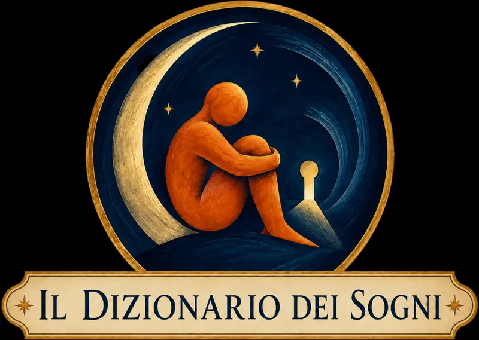
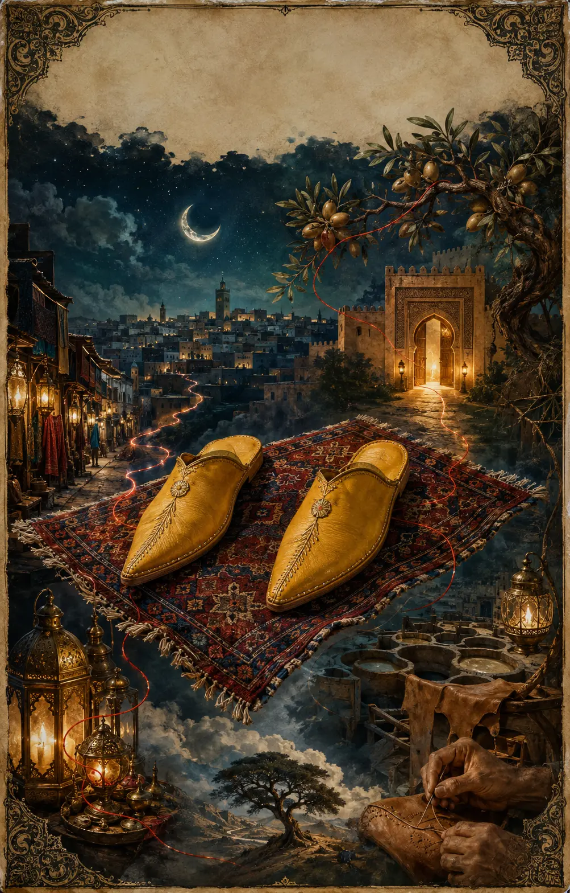
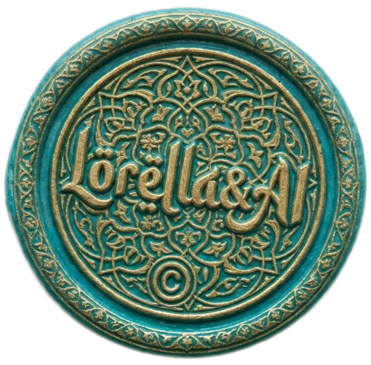

La luna
Appartiene al territorio dell’intuizione. Illumina senza mostrare ogni dettaglio e suggerisce di ascoltare ciò che percepiamo anche quando non possediamo ancora tutte le risposte.

Una collaborazione da sogno
Viaggi da Sogno · Tavole oniriche interattive
Il passo che conosce la strada


Tocca i punti luminosi della tavola per seguirne i simboli.
Appartiene al territorio dell’intuizione. Illumina senza mostrare ogni dettaglio e suggerisce di ascoltare ciò che percepiamo anche quando non possediamo ancora tutte le risposte.
Rappresenta un passaggio possibile. La luce invita a entrare, ma la soglia richiede una scelta: restare nel territorio conosciuto oppure attraversarla.
È il luogo delle possibilità e del confronto. Sognare di scegliere delle babbucce al mercato può riflettere la ricerca di una nuova direzione fra molte alternative.
Rappresentano il cammino personale, l’identità e il rapporto con la propria direzione. Invitano a domandarsi se la strada che stiamo percorrendo ci appartenga davvero.
È il desiderio di superare un limite senza seguire i percorsi abituali. Può esprimere immaginazione, libertà oppure il bisogno di osservare la propria vita da una prospettiva più ampia.
Unisce luoghi, persone e momenti apparentemente lontani. È la memoria che accompagna ogni cambiamento e ricorda che nessuna partenza cancella completamente ciò che siamo stati.
Rappresentano il tempo, la cura e la trasformazione. Ricordano che una nuova strada non si trova sempre già pronta: a volte deve essere costruita un punto dopo l’altro.
Non tutti i viaggi cominciano con una valigia. Alcuni iniziano mentre dormiamo, quando un oggetto comune perde la propria funzione quotidiana e diventa un simbolo.
Le babbucce proteggono il piede senza imprigionarlo. Sono morbide, facili da indossare e aperte sul tallone. Nel sogno possono rappresentare il modo in cui affrontiamo un cambiamento: il desiderio di partire senza perdere il contatto con ciò che conosciamo.
Non indicano necessariamente un lungo viaggio. A volte parlano semplicemente del prossimo passo.
Può indicare una possibilità pronta a essere considerata. La strada esiste, ma non è ancora stato compiuto il primo passo.
Suggerisce disponibilità al cambiamento. È importante ricordare se fossero comode: il sogno potrebbe mostrare quanto la nuova situazione sia adatta alla persona che siamo diventati.
Può rappresentare una soluzione inattesa oppure la scoperta di una direzione che era già vicina, ma non era stata riconosciuta.
Può richiamare un consiglio, un’opportunità o un’eredità simbolica ricevuta da qualcuno. Le emozioni provate rivelano se quel dono è vissuto come aiuto oppure come condizionamento.
Indica una scelta consapevole fra diverse possibilità. Il prezzo, il colore e l’esitazione possono mostrare quanto siamo disposti a investire in un nuovo percorso.
Può riflettere entusiasmo, indecisione o paura di rinunciare alle alternative. Non sempre avere molte possibilità rende più semplice la scelta.
Rappresenta uno squilibrio: una parte di noi vorrebbe procedere mentre un’altra non è ancora pronta.
Può indicare due desideri, ruoli o direzioni che faticano a procedere insieme.
Suggerisce una situazione che limita, comprime o non ci rappresenta più.
Può indicare un ruolo per il quale non ci sentiamo ancora pronti oppure aspettative ricevute da altri che non percepiamo come nostre.
Richiama un inizio, una possibilità ancora intatta o un’identità che sta prendendo forma.
Parla dell’esperienza accumulata. Possono rappresentare stanchezza, ma anche una strada conosciuta profondamente.
Può segnalare che il modo abituale di procedere non funziona più e richiede una riparazione oppure una scelta diversa.
Il significato cambia secondo il colore dominante e l’emozione provata. Questo simbolo aprirà la strada alla tavola dedicata ai colori nei sogni.
Le babbucce erano mie oppure appartenevano a qualcun altro?
Erano comode, strette o troppo grandi?
Le indossavo oppure mi limitavo a guardarle?
Dove sembravano condurmi?
Provavo curiosità, sicurezza, esitazione oppure desiderio di tornare indietro?
Prima di diventare un simbolo onirico, le babbucce hanno attraversato davvero paesaggi, mercati, lingue e antichi mestieri.
In Marocco si chiamano balgha. La loro storia conduce dalle comunità pastorali alle concerie di Fès, dalle mani del calzolaio alle botteghe colorate del mercato.
Sali sul Tappeto e scopri il loro viaggio realeTavola realizzata con intelligenza artificiale per Il Tappeto Volante · Viaggi da Sogno